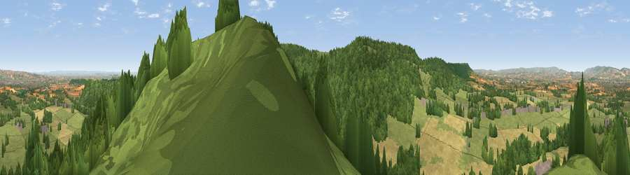

Viewpoint near Pitminster
#4600 in England · top 12% of its area beats it · near PitminsterWhere it is
The exact computed spot (ST 22175 18125). Click the marker for map links.
The view, rendered

A 360° render of this exact spot computed from the terrain model, tree cover and land cover — summer colours, afternoon light, calibrated against photographs of famous viewpoints. Real trees, hedges and buildings will differ in detail.
The panorama
Grey silhouette: terrain skyline in each direction (720 bearings, Earth curvature and refraction included). Dashed green: skyline with trees (+15 m) and buildings (+8 m) as obstacles. Blue strip: how far the ground is visible on each bearing.
Where the view opens
Wedge length = distance to the farthest visible ground on that bearing (vegetation-aware). Rings at 10, 25 and 50 km.
What fills the view
43% grassland · 36% woodland · 20% cropland · 2% built-up
Angular shares of the visible panorama (visual magnitude), not map area. Landscape diversity 0.49 (0–1 Shannon).
Key numbers
More beautiful places nearby
The staircase of upgrades: each row has a higher view potential than everything closer. Driving times are estimates from straight-line distance, calibrated against real road routing — check an actual route before setting out.
| Place | Direction | Drive | Score |
|---|---|---|---|
| Viewpoint near Pitminster | SSW · 1 km | ~4 min | 73.1 |
| Viewpoint near Pitminster | SW · 2 km | ~5 min | 74.2 |
| Viewpoint near Pitminster | WSW · 3 km | ~7 min | 77.3 |
| Viewpoint near Broomfield | NNW · 14 km | ~26 min | 78.5 |
| Cothelstone Hill | NNW · 15 km | ~27 min | 82.1 |
| Viewpoint near West Bagborough | NNW · 17 km | ~29 min | 84.3 |
| Wills Neck | NNW · 18 km | ~31 min | 85.7 |
| Viewpoint near Holford | NNW · 24 km | ~39 min | 85.9 |
50.95728, -3.10944 · source: screening · position refined by local search. Computed location — check access rights before visiting.